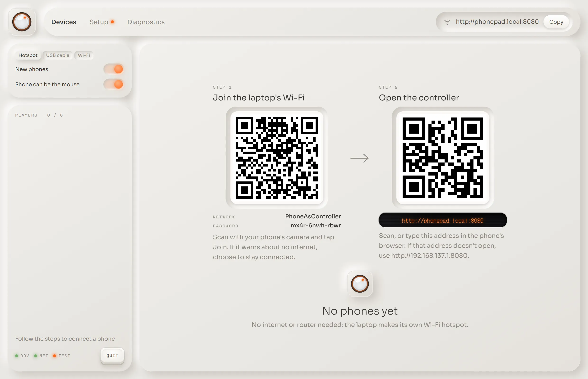
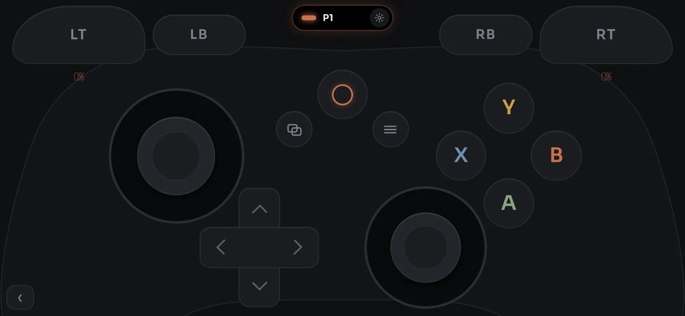
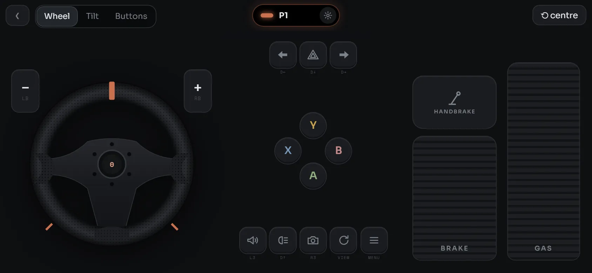
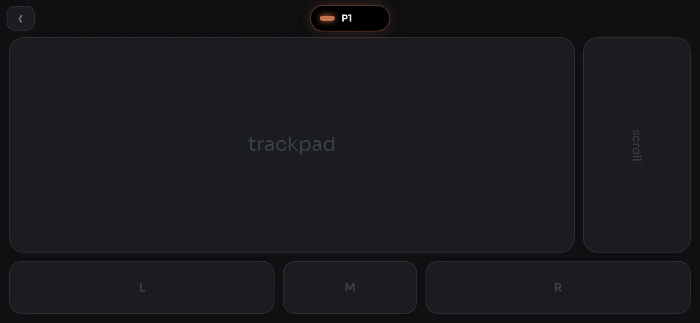
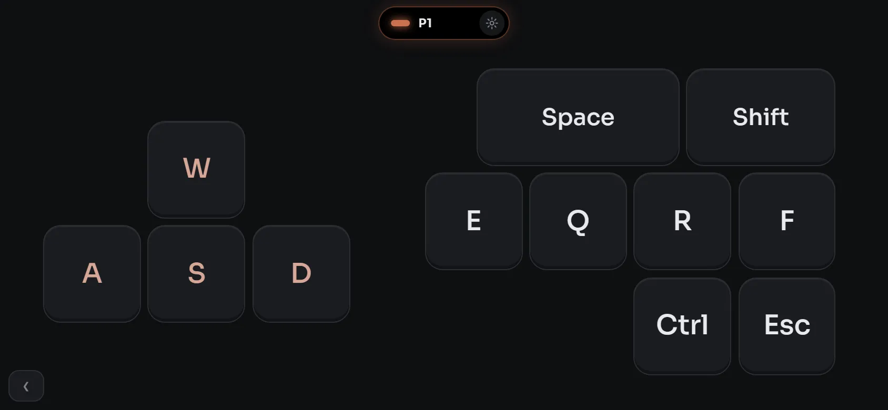

Game controller
Sticks, triggers, bumpers, D-pad and rumble. Choose Xbox 360 or DualShock 4 for each phone.
PhoneAsController turns an Android phone into an Xbox or PS4 controller, racing wheel, keyboard and trackpad for your Windows PC. It needs no internet and no router, and there's nothing to install on the phone.
Download for WindowsFree · 48 MB zip · Windows 10 and 11, 64-bit
See the source on GitHub


PhoneAsController is a free Windows app that lets an Android phone control your PC. Windows sees a standard Xbox 360 or DualShock 4 controller, so games that support those controllers should treat your phone like the real thing.
The laptop makes its own password-protected Wi-Fi, and the phone joins it by scanning a code. The controller then opens in the phone's browser, so the only thing you install is the app on your PC.
Sticks, triggers, bumpers, D-pad and rumble. Choose Xbox 360 or DualShock 4 for each phone.

Steer by touch or with buttons. Gas, brake and handbrake are always under your thumb.

Move the real cursor, with the multi-finger gestures you'd expect from a laptop.

WASD and the keys games use most, at real keycap size. Pick the keys you want.
Neither device has to be online. Pick whichever suits where you are.
The laptop makes its own password-protected Wi-Fi. Scan one code to join and another to open the controller. Wi-Fi only has to be switched on, even in aeroplane mode.
Plug in, turn on USB tethering on the phone and scan the code. No mobile data is used.
Already on the same network? Scan the code and play. Use the hotspot or USB for anything private, since others on a shared network may be able to read it.
Get the zip and extract it anywhere.
It sets up everything. If Windows says it protected your PC, click More info, then Run anyway. Say Yes when Windows asks for permission.
Scan the Step 1 code with your phone's camera and tap Join. If it warns about no internet, choose to stay connected.
Scan the Step 2 code. That's it: nothing to install on the phone.
48 MB zip. Removes cleanly from Windows Settings, under Installed apps.
Closing the app stops everything within a few seconds. Your hotspot name and phone names stay saved for next time. The controller driver stays installed but idle until you uninstall it.
Yes. PhoneAsController makes its own password-protected Wi-Fi hotspot on the laptop, so neither device needs internet or a router. The laptop's Wi-Fi must be switched on, but it doesn't have to be connected to anything. You can also use a USB cable with USB tethering.
The hotspot needs the laptop's Wi-Fi on, and aeroplane mode turns it off. Windows lets you turn Wi-Fi back on while staying in aeroplane mode, and the app has a Turn on Wi-Fi button for this. It only turns Wi-Fi on when you click.
No. You scan a code and the controller opens in the phone's browser. Only the Windows PC needs an install.
Windows sees a standard Xbox 360 or DualShock 4 controller through the ViGEmBus driver, so games that support those controllers should work. Some anti-cheat systems may block virtual controllers.
It is built and tested on Android phones with Chrome, mainly a Samsung Galaxy S22 Ultra. iPhones have not been tested.
One early test on a Galaxy S22 Ultra over home Wi-Fi measured about 9 ms one way. It used an earlier build, and results depend on the phone and connection. The app shows a live ms reading so you can check your own.
Up to 8 phones can join, each with its own name and colour. Many Windows games read at most 4 Xbox controllers.
No. Closing the window stops the app within a few seconds: phones disconnect, and the hotspot, network ports and helper programs are gone. Nothing runs in the background or at startup. Your settings stay on disk, and the controller driver stays installed but idle until you uninstall it.
The app isn't commercially code-signed, so Windows shows "Windows protected your PC". Click More info, then Run anyway.
The controller page uses plain HTTP so it opens with no certificate warning. On the laptop's hotspot, the Wi-Fi password protects the traffic. On a shared Wi-Fi network, others may be able to read it, so use the hotspot or USB for anything private.